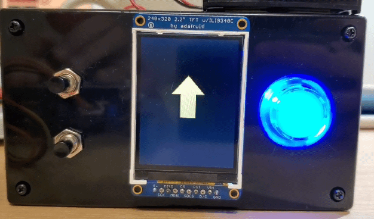

Software Design
Program Details
Setup
We utilized both cores on Raspberry Pi Pico (RP2040) as well as a state machine implemented in a thread called protothread_main to efficiently maintain our code. In the protothread_main thread, the main functions (all named as run_GAMENAME) for different game states or the main menu would be executed. By default, the state is set to be the main menu, so the main menu screen is displayed whenever the console is rebooted. On Core 0, we ran the main() function in which all the initializations happen, such as stdio_init_all() that initializes all the present standard stdio types, the setups for TFT (LCD screen), and gpio_set_irq_enabled_with_callback() that enables the GPIO interrupts for the joystick. The joystick’s sensitivity had to be reduced to make it correctly detect four directions (up, down, left, and right), instead of the initial configuration of having eight directions. With these GPIO interrupts being set up, the joystick would detect a signal only when it is at a either falling or rising edge.
Main Menu
The main menu screen displays the text “Z&S Arcade”, as well as the titles of our three games in the order of Pong, Snake, and Memory. The player can choose different games by moving the joystick downward and pressing the blue arcade button for selection. To implement this logic, we made a counter variable that stores how many times the joystick’s switch has been triggered, and based on the counter value, we displayed a cyan colored arrow next to the corresponding game title in the main menu. We reset the counter when it reaches the last game so that the arrow cursor can be looped back to the first game. When each game is over, the player can press the bottom push button on the left-hand side of the LCD screen to go back to the main menu. We used a state machine for the main menu logic with a global variable called state; when one round of a game is finished, and when the bottom button input is detected, we set our state variable to MAIN, which signals the system to go back to the menu and allows the player to re-select a game.
Pong
When the player selects Pong from the main menu, the state variable is set to PONG, which signals to execute the pong_func function that sets up the screen layout such as the borders, lives, and the score. After finishing the setup, it calls a function called run_pong where it calls other helper functions for animations in a while loop. We wrote several functions such as generateBall, generatePaddle, clearBall, clearPaddle, and updateBall. generateBall, generatePaddle, clearBall, and clearPaddle are self-explanatory, where we drew or erased the ball and the paddle using the tft_fillRect and tft_fillCircle functions from the TFT library. The function updateBall contained the most important logic which determined the position, speed and direction of the ball and the paddle after each frame. We decided to increase the ball’s speed when it hits either sides of the paddle, rather than increasing it as the score goes up. The ball’s speed is back to the default speed when it hits the middle of the paddle. Since the ball gets updated every frame, and we need to access the position and velocity at the previous frame, we made a struct for the ball to efficiently store and access them. The paddle logic was relatively simpler, as it only gets updated when the player moves the joystick.
The game starts with three lives, and when the player misses the ball, it decrements by 1. When the lives variable that keeps track of the number of remaining lives reaches 0, all the animations are stopped and a screen that explains which button to press to either start a new Pong game or return to the main menu. If the player presses the top button to continue playing Pong, the state variable gets set to PONG again, and the run_pong function gets executed again. The implementation for returning to the main menu is explained above in the Main Menu section.
Snake
When the player selects Snake from the main menu, the state variable is updated to SNAKE, which runs the function run_snake. Following the same logic as the ball struct in Pong, we created a struct for the snake to easily store and access the x and y position of the snake. We also defined a pointer in the struct, called next; we were able to update the positions of the snake’s head and tail using this pointer. To update the position of the snake and make it look like the snake is moving across the screen, we wrote a function called move, which updates the x and y coordinates of the snake. This basic function gets called in other functions: moveUp, moveDown, moveLeft, and moveRight. These four functions are called when the player uses the joystick to control the direction of the snake; we used a switch case statement in run_snake to call one of the four functions that corresponds to the new direction.
The snake has to eat an apple to grow and earn a 10 point score. Our apple is indicated by a small red circle, and a new apple gets randomly generated once the snake eats the current one. To implement this, we made an array with 2 elements called apple, which contains the x and y coordinates of the apple’s position. Then, we wrote functions called randomGenerator, food and ate_the_apple. The function randomGenerator uses rand to generate a random position on the screen. The function food checks if the snake’s head is at the same position as apple, and regenerates a new apple. The function ate_the_apple updates the position of the snake’s head to the new coordinates depending on the direction it is facing. This function is called whenever the snake’s head is close enough to the apple’s position so we can consider that the snake has “eaten” the apple. We set this distance between the head of the snake and the apple to be 8 pixels. Once the snake successfully eats an apple, the length of its tail increases; the snake “grows”. We created a function called expand to increase the tail length by 8 pixels every time the snake eats an apple. We accomplished this by redrawing the head at the same position, drawing 8 more pixels at the end of the tail, and re-defining the tail node to take the newly updated length into account.
Our snake dies when it either tries to eat itself (the head runs into the body), or hits an edge of the screen. We made a function called dead to update the alive variable which checks if the snake is alive or dead, and display the score of the current round and instructions that help the player choose to either restart the Snake game or go back to the main menu. For this game, we coded so that the player can either move the joystick to any direction or press the top button to continue playing Snake; this was mainly because each round of our Snake game ended fairly quickly, and we thought that it would be more convenient to be able to restart the game by simply moving the joystick. The logic for returning to the menu is explained in the Main Menu section above.
Memory

When the player selects Memory from the main menu, the state variable is updated to MEMORY, which runs the function run_memory. The run_memory function first displays a title screen that briefly explains how the game works, as this game is our original implementation, unlike Pong and Snake, and the player may not be familiar with the rules. When the player presses the blue arcade button, the actual game starts. How this game operates is explained in detail in the High Level Design page.
When the game starts, the same randomGenerator function that we used in Snake is called and stores a random sequence of numbers from 1 to 4 in an array called computer. We wrote a function called computerDisplay which draws one of the four arrows depending on the number stored in the computer array. For convenience, we defined macros as follows: 1 for UP_ARROW, 2 for DOWN_ARROW, 3 for LEFT_ARROW, and 4 for RIGHT_ARROW. After displaying each arrow, we put a delay with a length of 750ms to prevent the screen from moving onto the next arrow too fast. Then, we wrote a function called checkPlayer, which sets the arrow variable to the corresponding value (from 1 to 4) depending on the joystick input. We again used a switch case statement for the implementation of this logic, as we did in Snake. After the computer finishes displaying a sequence of arrows, the screen displays a text that says “Your turn!” until it receives a joystick input. As the player moves the joystick, it displays an arrow that points to the corresponding direction. For this, we made a function called display_Player which also uses a switch case statement to display arrows depending on the joystick direction. The player inputs are also stored in an array called player so that it can be compared to teh computer array.
When the player correctly inputs the same sequence of arrows as the computer has shown, the levelClear function is called, the level counter variable is incremented, and the computer and player arrays are emptied for the next level. In the function levelClear, we display a screen which shows the level that the player just completed, and a sentence that informs the player to press the blue arcade button to move onto the next level. We wanted to have a pause after each level, because the player might not feel ready to start the next level right after they completed one level. The next level won’t start until the blue button is pressed.
If the player inputs a wrong direction as the answer, the level ends immediately and the levelFail function is called. This function displays the last level that the player completed and instructions for the buttons. If the player presses the top button, the state variable gets set to MEMORY again and the game restarts; if the player presses the bottom button, it goes back to the main menu, as explained in the Main Menu section above.
Reference to Any Design or Code from Someone Else
All the screen layouts of the main menu and all games are uniquely designed by us. The basic logic of Pong and Snake were taken from the original games, developed by Atari and Gremlin Industries, respectively, and we got the idea of the memory test game from the simple reaction game that we implemented in one of the ECE 2300 labs. However, the reaction game that we created on a FPGA board with Verilog was a two-player game where the players had to press a button whenever a LED flashes, which is quite different from our memory game; we wanted to make a game that utilized the joystick instead of just pressing a button, so the reaction game from ECE 2300 was only for the inspiration. We searched online to look for references and confirm our logic, but most of the code was developed by us; the links to the references can be found on the Appendices page.
Things We Tried Which Did Not Work
At first, we started writing our games in MicroPython, which is an easy way to make games with microcontrollers such as RP2040. The main reason why we chose this over C language was because the TFT library for the LCD that was provided by the manufacturer, adafruit, was written in Python. However, as we were implementing Pong, we realized that the game speed was too slow and the screen was flickering at a noticeable rate. It took too much time to erase the previous frame and redraw a new one, which made our game quality seem very low. Then, we found out that someone from Cornell rewrote the entire LCD library in C, and decided to switch to C. It was not an easy decision as we were almost done implementing Pong, but was necessary to enhance the quality of our project.
| MicroPython version of Pong | C version of Pong |
|---|---|
 |
Although we had to change many things when we transitioned from MicroPython to C, as the modules we could use in each language were different, the logic stayed the same, so it was not as bad as writing everything from scratch. It was an interesting experience of observing the great performance difference between the two languages, although the microcontroller that executed the code stayed the same.
In addition, we first attempted using multithreading to implement the logic to return to the main menu or restart the current game. We tried making separate threads for each game and the main menu, and signaling which thread to run through semaphores, with thread functions such as PT_SEM_SIGNAL(pt, pt_sem) and PT_SEM_WAIT(pt, pt_sem). However, we ran into a bug in which after we finished one game and went to the main menu, we could only go back to the same game; if we selected a different game, it would never start running the thread for that game and stay frozen until we reboot the Pico. To fix this problem, we came up with another way of implementing our logic: a state machine. We first tried on one of our games to confirm that it works, and decided to switch to using a state machine instead of multithreading and semaphores.
Lastly, we originally wanted to implement Space Invaders as our second game with our own design of aliens, but displaying bitmaps with the TFT library that we used did not work out well, so we had to give up on it. It successfully displayed when we tried with MicroPython, so we hope to re-implement Space Invaders as our future improvement on this project.